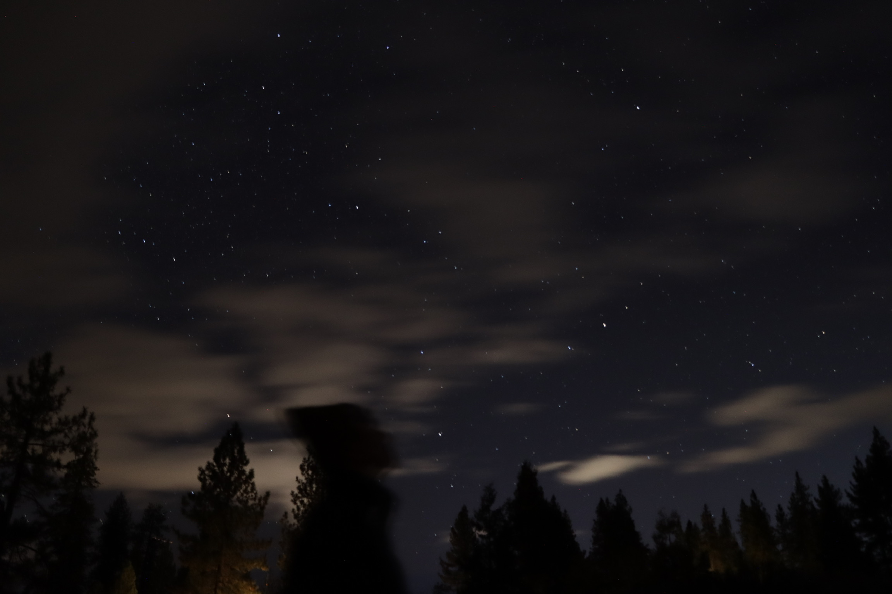

Welcome to Juhyun's Website!
Introduction
Hi, my name is Juhyun Do!
I’m a junior at UC Berkeley studying Electrical Engineering & Computer Science.
I am interested in building more energy-efficient and performant hardware accelerators. Right now at Berkeley, I am taking Tapeout IC Design Project - 16nm SoC (EE 194), Computer Architecture (CS 152), and Advanced Digial Design and Integrated Circuits (EECS 251B). In previous semesters, I've taken classes such as Digital Design and Integrated Circuits (151), ASIC lab (151LA), Intro to Machine Learning (CS 189), and Great Ideas of Computer Architecture (CS 61C).
I am excited to see where my life — and my love for learning and making impact — takes me next!
In my free time, you can find me reading books, playing ping-pong/video games, running or climbing hills during sunsets!
My Projects (recent to old)
5 Stage RISC-V CPU with Dirrect Mapped Cache & Branch Prediction and Forwarding in Verilog
Oct - Dec 2025
Implemented a 5 stage RISC-VCPU datapath. Multiple bypasses implemented with control and forwarding logic to minimize stalls. We do not stall except for hazards of one stall for wrong branch and one stall for jalr after load. Drew FSMs and implemented synchronous direct mapped write-back icache and dcache that interact with external memory with stall flags if the cache is busy.
Fine-Tuning LLM to Solve CS 189 MCQs (While Maintaining General MCQ Ability)
Nov 2025
Fine-tuned Qwen2.5-0.5B-Instruct model to solve Berkeley’s CS 189 (Intro To ML) MCQ Problems. Applied Dual-stage Mixed Fine-tuning to address catastrophic forgetting. Achieved an accuracy of ~42.5% on a test dataset of 169 questions, an improvement from ~28% accuracy of the base model.
Two Layer Rectilinear Routing Problem
May - June 2025
Drastically improved a two layer routing problem using A* algorithm and approximation of Steiner tree, reducing total HPWL by 27.6% while improving runtime by 3 folds.
32-bit RISC-V CPU
March - April 2025
Built a CPU that supports 32 bit RISC-V instruction set architecture from scratch in Logisim. Implemented ALU, control logic, immediate generator, 2 stage pipelining, and data hazard solutions.

Digit Classification in RISC-V
February 2025
Wrote a simple machine learning algorithm in RISC-V to classify handwritten digits. Implemented functions like MatrixMul, ReLU, ArgMax, and Classify.
My Hobbies
Books
Ping-Pong
Running
Movies
Sunsets
Swimming
Contact Me
I'd love to get in contact with you, so please feel free to reach me on any of these platforms.
Two Layer Rectilinear Routing Problem

Skills used/learned:
- Routing
- A* Algorithm
- Steiner Tree
- Python
32-bit RISC-V CPU


Skills used/learned:
- Digital Logic Circuit Design
- Computer Architecture
Digit Classification (RISC-V)


Skills used/learned:
- RISC-V
- Calling Convention
Ping-Pong

I've started playing ping-pong since middle school. Ping-pong not only allows me to have fun and de-stress, but it's also allowed me to connect and form lasting relationships with many people. From playing with my dad in Korea to late-night ping-pong in freshman year, ping-pong has shaped a significant part of who I am today!
Movies


My favorite movies: Inception, Dune, Intersteallar, Ford v Ferrari, Elemental, and Star Wars!
Swimming

I love to swim in beautiful seas, lakes, and rivers! One day, I hope to get a scuba-diving license and learn how to surf.